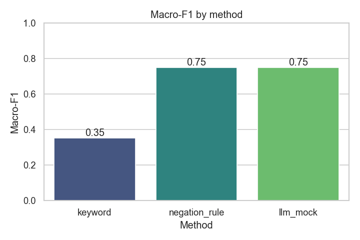
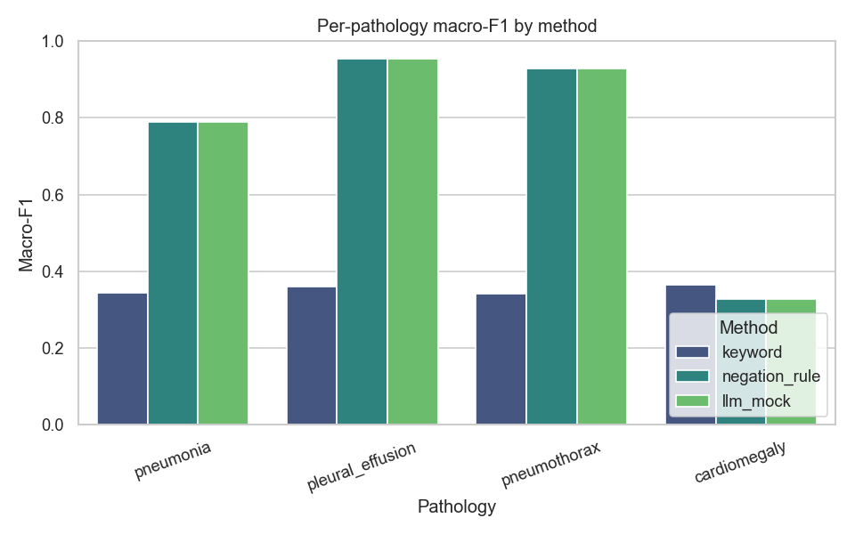
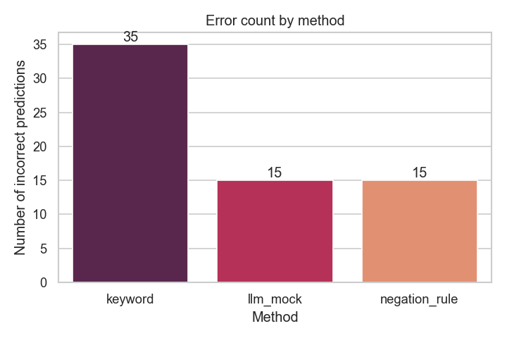
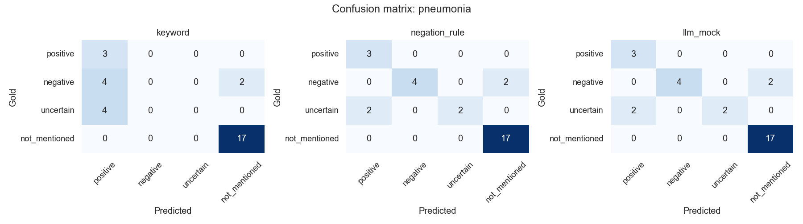

Motivation
Chest X-ray classifiers are trained on pathology labels that are themselves extracted from free-text radiology reports. If those labels are wrong, every downstream model inherits the error. This project asks a focused question about how we extract those labels.
Why radiology report labeling matters
- Manual annotation of hundreds of thousands of reports is infeasible.
- Label quality directly bounds downstream imaging-model quality.
- Honest benchmarks let us compare labeling methods reproducibly.
Research question: How do keyword-based, negation-aware, and LLM-based labeling approaches differ when extracting pathology labels from chest X-ray reports containing negation, uncertainty, and clinical context?
Methods compared
1. Keyword baseline
Pathology word present → positive, else
not_mentioned. No negation or uncertainty handling.
2. Negation-aware rules
Clause splitting plus window-based negation and uncertainty cues. Transparent and readable.
3. Gemma via Ollama
Local LLM prompted to return JSON labels. Optional; a
mock mode keeps the repo runnable everywhere.
The four pathologies & label space
Pathologies
- Pneumonia
- Pleural Effusion
- Pneumothorax
- Cardiomegaly
Labels
positive— condition presentnegative— explicitly absent / negateduncertain— possibility, cannot excludenot_mentioned— not discussed
Example synthetic reports
All snippets are artificial and written for this project.
| Report | Pneumonia | Pleural effusion | Pneumothorax | Cardiomegaly |
|---|---|---|---|---|
| “No evidence of pneumothorax or pleural effusion.” | not_mentioned | negative | negative | not_mentioned |
| “Mild cardiomegaly is present.” | not_mentioned | not_mentioned | not_mentioned | positive |
| “Right lower lobe opacity may represent pneumonia.” | uncertain | not_mentioned | not_mentioned | not_mentioned |
| “Pleural effusion cannot be excluded.” | not_mentioned | uncertain | not_mentioned | not_mentioned |
| “The lungs are clear without focal consolidation.” | negative | not_mentioned | not_mentioned | not_mentioned |
| “Small left apical pneumothorax is seen.” | not_mentioned | not_mentioned | positive | not_mentioned |
Results (synthetic demo, mock mode)
| Method | Overall accuracy | Macro-F1 | Exact-match / report |
|---|---|---|---|
| keyword | 0.708 | 0.353 | 0.267 |
| negation_rule | 0.875 | 0.749 | 0.567 |
| llm_mock | 0.875 | 0.749 | 0.567 |
In mock mode the LLM labeler mirrors the negation-aware labeler. With real Gemma via Ollama the numbers will differ.




Failure modes
The synthetic set is designed to expose where naive labeling breaks:
- False positive on negation:
“No pneumothorax following line placement.” — keyword
matching labels
positive; gold isnegative. - Uncertainty misclassified:
“Infiltrate in the left lower lobe, likely representing
pneumonia.” — hedging without a listed cue is read as
positiveinstead ofuncertain. - Missed concept (no keyword):
“The heart is enlarged…” — no exact keyword, so
cardiomegaly is missed as
not_mentioned. - Out-of-vocabulary negation:
“Cardiomegaly is not present.” — “not present”
is outside the cue list, so it is read as
positive.
Limitations
- Tiny synthetic dataset (30 snippets); numbers are illustrative only.
- Simple fixed cue lists and windows; misses out-of-vocabulary phrasing.
- Mock mode is not a real language model.
- Not clinically validated; not a clinical tool.
- No real MIMIC-CXR data is used or redistributed.